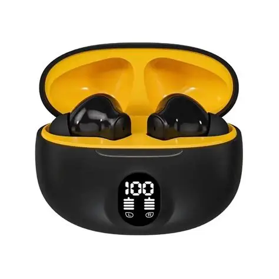

O ProSound X1 é um fone Bluetooth desenvolvido para oferecer qualidade de áudio, conforto e praticidade no dia a dia.
| Especificação | Detalhe |
|---|---|
| Bluetooth | 5.3 |
| Duração da bateria | Até 30 horas |
| Tempo de carregamento | 2 horas |
| Peso | 250 g |
| Conexão | Bluetooth sem fio |
| Produto com garantia de 12 meses. | |
Saiba mais sobre tecnologia Bluetooth no site oficial do Bluetooth .
Entre em contato conosco para obter mais informações sobre o produto.